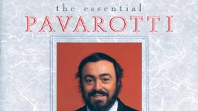
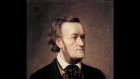

Bizet, Georges - Habanera |
Bizet, Georges - March and Chorus |
Bizet, Georges - Toreador |
Carl Orff - O Fortuna ~ Carmina Burana |
Handel, George Frideric - Da Tempeste - Amanda Forsythe/Apollo's Fire |
Monteverdi, Claudio - Possente spirto |
Mozart, Wolfgang Amadeus - Act I Scene 9: Duettino: La ci darem la mano |
Mozart, Wolfgang Amadeus - Commendatore |
Mozart, Wolfgang Amadeus - Don Giovanni, catalogue aria |
Mozart, Wolfgang Amadeus - Queen of the Night |
Mozart, Wolfgang Amadeus - Roth and Le Roi perform "Papagena / Papageno!" |

Puccini, Giacomo - Nessun dorma |
Puccini, Giacomo - Si. Mi chiamano Mimi |
Rossini, Gioachino - Largo Al Factotum (Figaro) |
Verdi, Giuseppe - Il Trovatore - Anvil Chorus |
Verdi, Giuseppe - Rigoletto - Pavarotti, Gruberova, Wixell - Chailly |

Wagner, Richard - Bridal Chorus |
Wagner, Richard - Ride of the Valkyries |
Zola Jesus - Krunk |